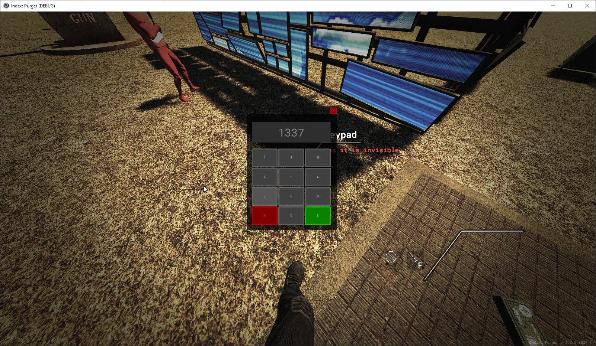
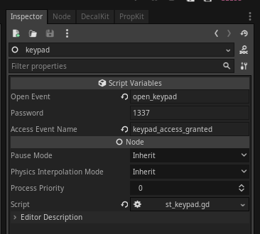

Module: keypad_menu
Documentation last edited: November 23, 2025 at 12:13 UTC
Description

Вот оно, тот самый момент, когда мы можем превратить эту игру в immersive-sim, о да. Хотя, неважно, возможно, этого и не случится.
Есть 2 способа использовать эту штуку: либо писать код, либо использовать ST.
Код
Первый аргумент - пароль (как строка). Второй аргумент - имя события при успешном доступе.
KeypadMenu.open("1337", "keypad_access_granted")
Script Toolkit

Просто используй
"st_keypad"
.
"Open Event"
- это событие, которое должно произойти, когда эту клавиатуру нужно открыть (чёрт, это сложнее описать, чем я думал).
"Password"
- это пароль, имей в виду, что есть ограничение в 4 цифры.
"Access Event Name"
- это событие, которое происходит при правильном вводе пароля.
General Information
Root directories list
assets, docs, src
Nodes
Classes
None
Resources
None
Other Scripts
None